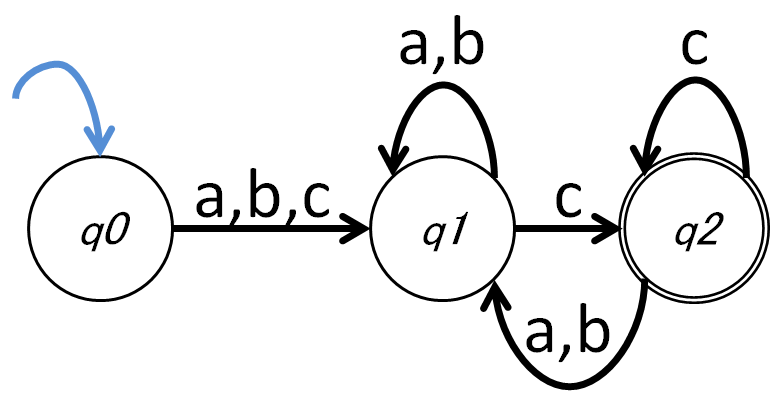

クレアさんよぅ、プログラマの世界では文字列検索や文字列の置き換えや入力文字列のチェックなんかに便利な表現というのがあるらしいな？
そうなんですか？
なんじゃ、知らんのか？ それとも、知らない振りしてワシを試しとるんかな？ よく意味は分からんがこんなようなやつじゃ。
a+bただの数式じゃないんです？
いや、どうやらそうじゃないらしいんじゃ。「 a が並んで b 」みたいなことらしいんじゃが……。
ふぅん。……正規表現のことですね。
授業支援用サイト
このページでは正規表現の基礎をガンツやクレアと一緒に学んでいきます。
ガンツはドワーフの万屋経営者です。最近、世間では業務の IT 化がすっかり進んでいるのを知って、年寄りの手習いで自分でもシステムをいじり始めている。
メイドのクレアは、ガンツに雇われた少し口の悪い普通の人間です。 IT に詳しく、ガンツの経営の IT 化を補助しています。
クレアさんよぅ、プログラマの世界では文字列検索や文字列の置き換えや入力文字列のチェックなんかに便利な表現というのがあるらしいな？
そうなんですか？
なんじゃ、知らんのか？ それとも、知らない振りしてワシを試しとるんかな？ よく意味は分からんがこんなようなやつじゃ。
a+bただの数式じゃないんです？
いや、どうやらそうじゃないらしいんじゃ。「 a が並んで b 」みたいなことらしいんじゃが……。
ふぅん。……正規表現のことですね。
ここをクリックすれば解説が表示されます。
正規表現 unn?ko にマッチする文字列を入力してください。
正規表現 unn?ko にマッチしない文字列を入力してください。
正規表現というのは、要するに複数の文字列をパターン化した表現なんじゃな。
……まあ、そんな感じです。
今日のクレアさんは、なんか歯切れが悪いな。「?」は直前の文字があるかないかを表したわけじゃが、とりあえず何か文字があるみたいなことって表せないのか？
任意の 1 文字ですね。できます。
ここをクリックすれば解説が表示されます。
正規表現 un.ko にマッチする文字列を入力してください。
正規表現 un.ko にマッチしない文字列を入力してください。
同じ文字が連続するみたいなパターンの表現はないのかな？
あります。 0 個以上の連続か 1 個以上の連続かで違います。まずは 0 個以上の連続から見ていきましょう。
ここをクリックすれば解説が表示されます。
正規表現 go*gle にマッチする文字列を入力してください。
正規表現 go*gle にマッチしない文字列を入力してください。
前回 0 文字以上の連続については分かった。 1 文字以上というのはないのか？
ありますよ。
ここをクリックすれば解説が表示されます。
正規表現 go+gle にマッチする文字列を入力してください。
正規表現 go+gle にマッチしない文字列を入力してください。
連続する文字数を指定することはできないのかな？
できます。
何文字以上以下で指定できるのかな？
はい。それもできます。
ここをクリックすれば解説が表示されます。
正規表現 go{3,5}gle にマッチする文字列を入力してください。
正規表現 go{3,5}gle にマッチしない文字列を入力してください。
曖昧は曖昧でもそんなに曖昧じゃないということもあるじゃろ？
はぁ？ 言っていることが曖昧過ぎて、何を言っているのか分かりません。
例えば「セクシー」か「セクシィ」か「セクシイ」のどれかであることは確実なんじゃが「セクシい」はないみたいな感じじゃ。
候補が絞られている場合ですね。
ここをクリックすれば解説が表示されます。
正規表現 [AaEe]lice にマッチする文字列を入力してください。
正規表現 [AaEe]lice にマッチしない文字列を入力してください。
単一文字の複数候補を表す方法があるなら、いっそのこと a から z までのどれかみたいなことができたりしないのかな？
数字だけとか・小文字だけとか・大文字だけとか、文字候補を範囲指定で絞れますよ。
範囲指定？
ここをクリックすれば解説が表示されます。
正規表現 [0-9]{3} にマッチする文字列を入力してください。
正規表現 [0-9]{3} にマッチしない文字列を入力してください。
今まで合致する文字列パターンばかり扱ってきたわけじゃが、合致しない文字列パターンというのは表現できないのかな？
一応できます。ただ正規表現は否定を扱うのはあまり得意ではありません。
ほぉん。
ここをクリックすれば解説が表示されます。
正規表現 [^0-9]{3} にマッチする文字列を入力してください。
正規表現 [^0-9]{3} にマッチしない文字列を入力してください。
今まで単一文字が曖昧なパターンの取り扱いばかりじゃったが、文字列が曖昧だみたいなパターンは扱えないのかな？
例えば？
「力こそパワー」か「チカラこそパワー」か曖昧だなみたいな場合じゃ。
可能です。
ここをクリックすれば解説が表示されます。
正規表現 (Final|Initial)Fantasy にマッチする文字列を入力してください。
正規表現 (Final|Initial)Fantasy にマッチしない文字列を入力してください。
「可能」は検索対象にしたいが、「不可能」はいらんという場合もあるじゃろ？ こういう場合はどうすればいいんじゃ？ 「[^不]可能」だと「非可能」とか「屁可能」はオッケーになっても「可能」はダメじゃろ？
そうですね。この場合であれば、先頭位置を指定してやればいけそうですね。
ここをクリックすれば解説が表示されます。
正規表現 ^F.+ にマッチする文字列を入力してください。
正規表現 ^F.+ にマッチしない文字列を入力してください。
今までいろんな記号が出てきたわけじゃが、今まで出てきた記号そのものを検索対象にしたいみたいな場合もあるじゃろ？
そうなんですか？ 例えば？
例えば「[a-z]」と書くと、小文字の英字 1 文字のどれかを表してしまうわけじゃが、「a」か「-」か「z」を表したい場合もあり得るじゃろ？
なかなかひねくれてますね。でもこういう疑問を持てるセンスは重要です。こういう場合は、エスケープします。
えすけーぷ？
ここをクリックすれば解説が表示されます。
正規表現 \\d{3}-\\d{4} にマッチする文字列を入力してください。
正規表現 \\d{3}-\\d{4} にマッチしない文字列を入力してください。
ちゃんと覚えて使えば、正規表現が相当便利なツールっぽいというのは、おぼろげながら分かってきた気はするんじゃが……。
「じゃが……」？
例えばユーザに入力を促して入力値をチェックしたいみたいな状況があるとするじゃろ？
バリデーションですね。
得点の入力をさせたい、値は 0 以上 100 以下に限定したい、みたいな場合があるとする。
はい。
その場合「^(100|[1-9]?\d)$」でチェックできるじゃろ？ 他にも書き方はあるかもしれんが。……合ってるかな？
合ってます。素晴らしいです。
そうじゃろ！ じゃが、こんな素晴らしいワシの能力を以てしても、パスワードのバリデーションができんのじゃ。
へぇ……。パスワードのバリデーションってどんなものを考えてるんですか？
アルファベットの大文字・小文字・数字と一部の特殊記号（ $%& ）をそれぞれ 1 文字以上ずつ含んでいて、全体としては 8 文字以上みたいなことを指定したいのじゃが……。
なるほど。それは難しいですね。
そうなんじゃ。例えば「^[A-Za-z0-9$%&]{8,}$」としたとするじゃろ？ そうすると「aaaaaaaa」みたいな文字列でもオッケーになってしまう。かと言って「^[A-Z]+[a-z]+\d+[$%&]+$」みたいにすると、大文字・小文字・数字・記号の順が固定で「Aa0$」はオッケーじゃが、順番を逆順にして「$0aA」にしたりするとパスワードとしてダメみたいな珍妙なことになってしまう。
しかも 8 文字以上制約がどっか行っちゃいましたね。
ほかにも「^.*[A-Z].*[a-z].*\d.*[$%&]$」とかにしても、先頭が大文字で固定というのが回避できるだけで、やっぱり文字種の順序は固定になってしまって上手くいかん。どうこねくり回しても、パスワードのバリデーションができる気がせんのじゃ。
「先読み」と呼ばれる方法を使うとできます。ちょっと難しいですが、パスワードをバリデートするための定型的な方法なので、覚えておいて損はありません。
先読み……？
ここをクリックすれば解説が表示されます。
正規表現 ^x(?=.*[a-z])(?=.*[A-Z])(?=.*\d)(?=.*[$%&])[a-zA-Z0-9$%&]{5,}$ にマッチする文字列を入力してください。
正規表現 ^x(?=.*[a-z])(?=.*[A-Z])(?=.*\d)(?=.*[$%&])[a-zA-Z0-9$%&]{5,}$ にマッチしない文字列を入力してください。
正規表現を覚えれば割とどんなパターンでも表現できそうな気がしてきたんじゃが、表現できないパターンってあるんかな？
よく挙げられる例は「a」が n 個並んだ後に「b」も n 個並ぶみたいなパターンですかね。
「a{3}b{3}」みたいなのじゃダメなのか？
それでは 3 個限定になってしまいます。できないと言っているのは、何個来るか分からないけれども a と b が同じ個数並ぶパターンのことです。
そっか……。無理なのかな。
実はプログラマが考える正規表現の景色は、正規表現を作った人たちが見ている風景と全く違っているんです。
どういうことじゃ？
ガンツさんはここまで正規表現を学んで、正規表現をどういうものだと思いましたか？
まあ、検索したり、入力値のフォーマットチェックしたりするのに便利なツールみたいな感じかな？
そうでしょう。それがプログラマが見ている正規表現の景色です。既存の言語の中に特定のパターンを発見するためのツールというのが、プログラマが正規表現に対して持っているイメージです。
そうではないのか？
もともとは正規表現は「正規言語」を構成するためのツールなのです。
せいきげんご？ 何じゃそれ？
正規言語は有限オートマトンによって受理できる言語の集合です。
おーとまとん？ 自動羊か？ 訳が分からなくてよく眠れそうじゃな。
自動羊（ Auto Mutton ）ではありません。自動装置（ Automaton ）です。
ここをクリックすれば解説が表示されます。
下記有限オートマトンで受理される文字列を入力してください。ただし、アルファベットは「a」と「b」と「c」しか存在しないものとし、状態 q0 を開始位置、状態 q2 を受理状態とします。

上記有限オートマトンで受理されない文字列を入力してください。